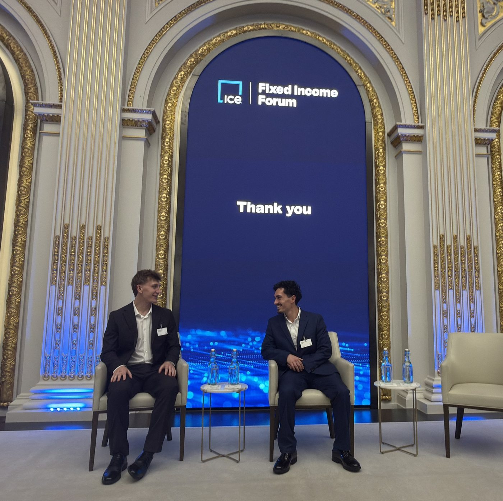
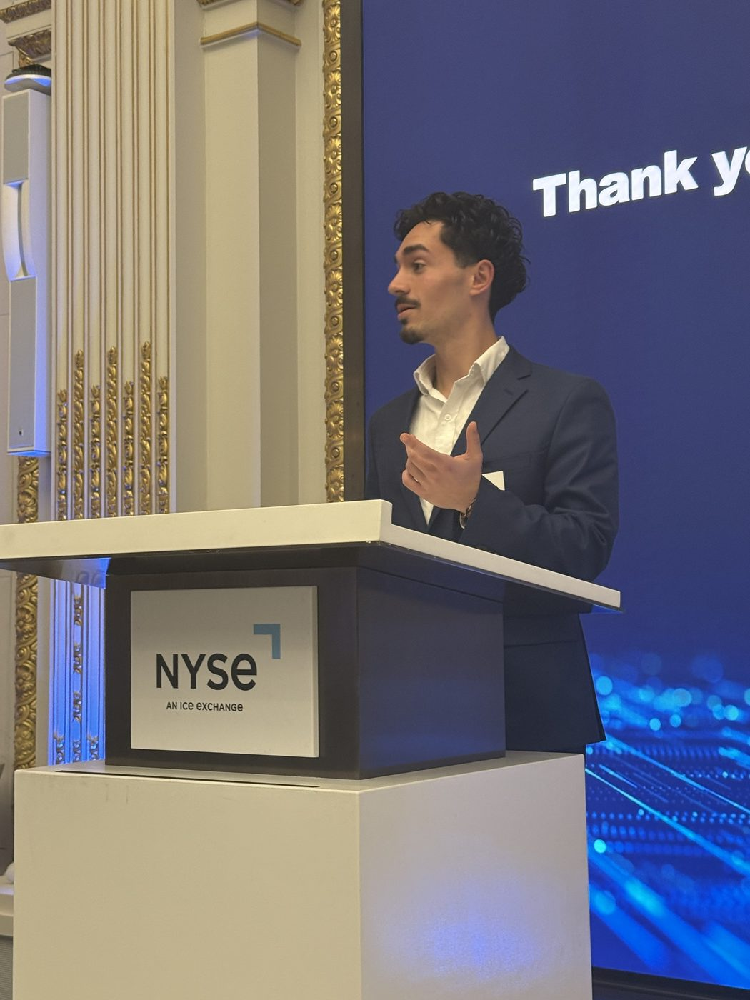

Finsight.
Finsight is a fintech platform that tracks the primary bond market for bankers and investors. I was responsible for collecting order book updates on new deals.
Collecting order books
Syndicate desks run the order book on every new bond deal, and none of them is obliged to share what is in it. I called and messaged desks at 30 plus investment grade and high yield banks for book sizes as deals moved from talk to guidance to launch, and then published the figures to the bankers and investors on the platform before the next update arrived. I covered fifteen to twenty deals a day.
Once a relationship is established, the information comes more quickly. None of those bankers owed me anything, and that was the most instructive part of the role.
A normal day, hour by hour
Two desks, two different markets
I covered high yield in the spring, where every deal turns on the company, its covenants, its call structure and the use of proceeds. I moved to investment grade over the summer, where issuers are large and frequent, spreads are tight and much depends on choosing the right window.
Transactions that stayed with me
- Alphabet's $25 billion offering, ten tranches out to 40 years, book around $115 billion. It was notable because a company that had always funded itself from cash was borrowing for data centers. I followed that book throughout the day.
- The Paramount Skydance exchange and tender offers. Consent solicitations, exchange offers into second lien notes, and cash tenders on the 2027 and 2028 notes. I wrote the wire headlines on the liability management flow, 25 plus deals across tenders, exchanges and consents. That work led directly to the tender tracker and the Skydance DCF.
- Relative value comps. Screens on tenor, rating and spread to gauge new issue concession, sent out with the deal terms.
Where does this print sit against every comparable deal since 2022?
I maintained ten daily screens showing the lowest spreads and lowest coupons printed in the 3, 5, 7, 10 and 30 year, covering every investment grade deal back to 2022 by week, month and year, with issuer, ratings, size, call, final book, coupon, yield and spread on every row. A check sheet held any prints that looked wrong until I had confirmed them.
When a banker asked how a new 5 year compared, the answer was on a single screen. In practice, concession is judged by comparing one deal with a large set of others and not by applying a formula.
What priced, where it came from, and how far it moved
Every afternoon the day's investment grade prints went into one table: issuer, rating, size, tenor, final book, leads, price talk, where it priced, the move from talk to print, and the identifiers. That table is where the morning wire's numbers came from.
Did the month come in where the desks said it would?
I tracked issuance volume against the Street's estimates by day, week and month, with deal counts, tranche size, talk to print, final book, attrition, concession and end of week trading. The daily sheet went back years, with holidays, zero days and Fed days marked. It is the table to consult when someone claims that issuance stops in August.
Checking 2019 Latin America deals one by one
The platform's history had gaps. I checked a list of 2019 Latin American deals one by one against what the platform had and returned the missing, incorrect and doubtful entries as a task list. The work was routine, but it is the kind of checking that makes a dataset worth paying for.
Approaching the internship as a full time role
- I reached out to the syndicate bankers I was collecting books from, at BBVA, Scotiabank and HSBC, to learn how they read demand and set concession. I still speak regularly with three of them.
- I taught myself the Bloomberg API in R and built the first version of the market dashboard, so that I could review the curve, DV01, spreads and new issue comps every morning.
- I travelled to New York in July at my own expense to work from the office for a few days and meet the team in person.
ICE Fixed Income Forum at the NYSE, October 2026
ICE Fixed Income Forum at the New York Stock Exchange, October 21, 2026.

On stage at the NYSE after the forum, October 21, 2026. 
The podium. 
The panel chairs, after the panel. 
Getting a feel for the room.